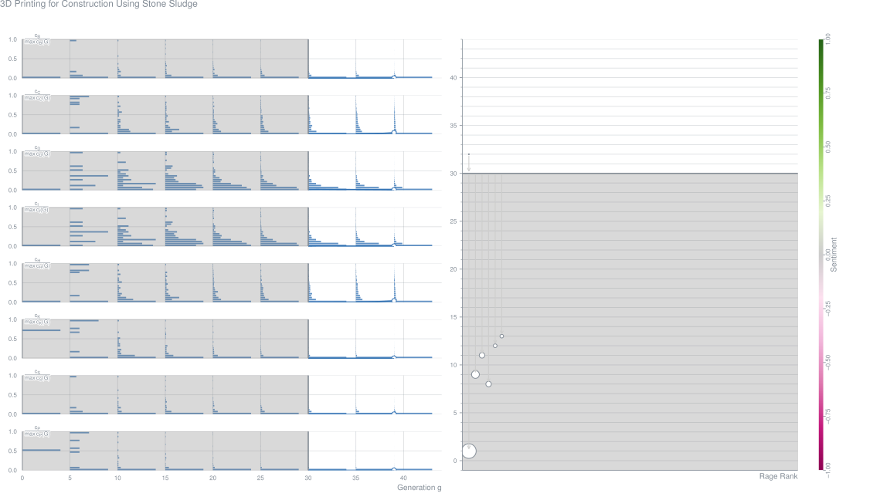
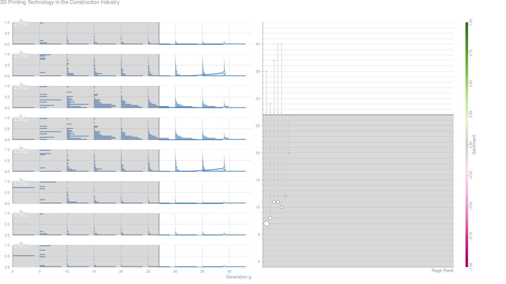
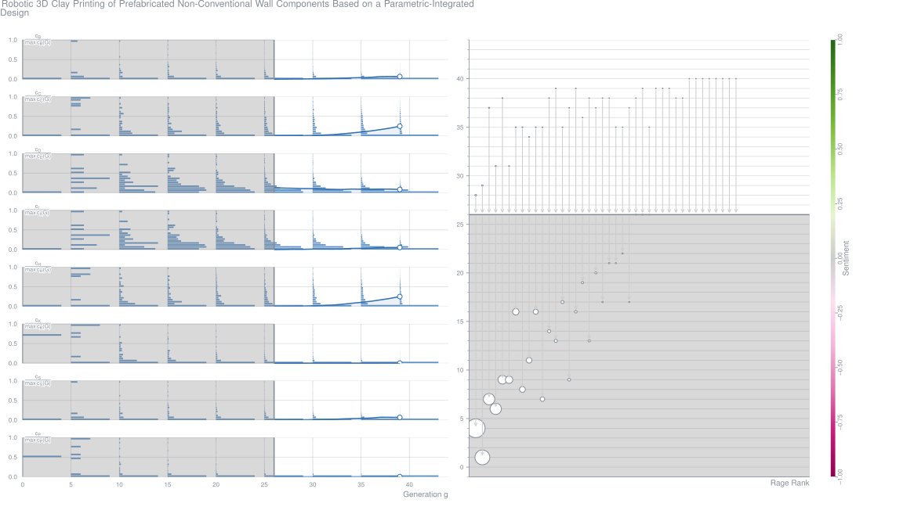
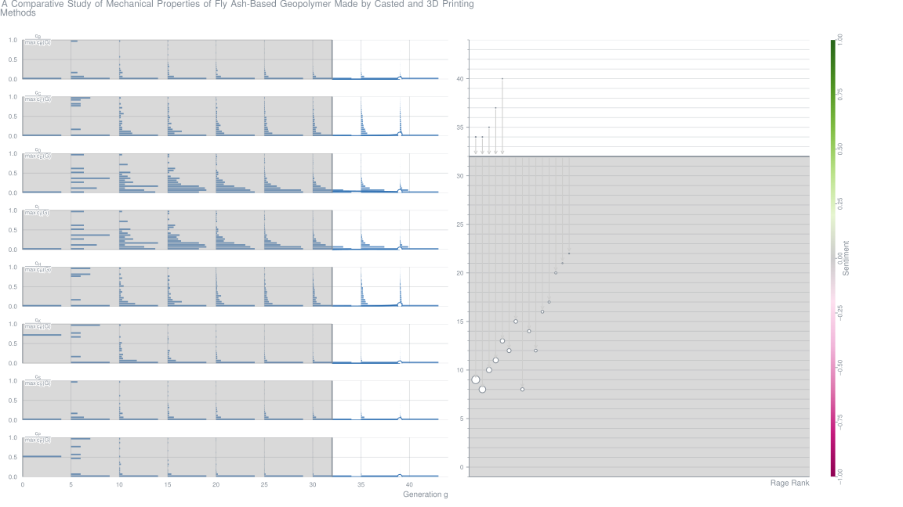
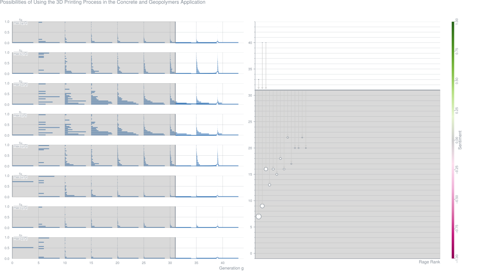
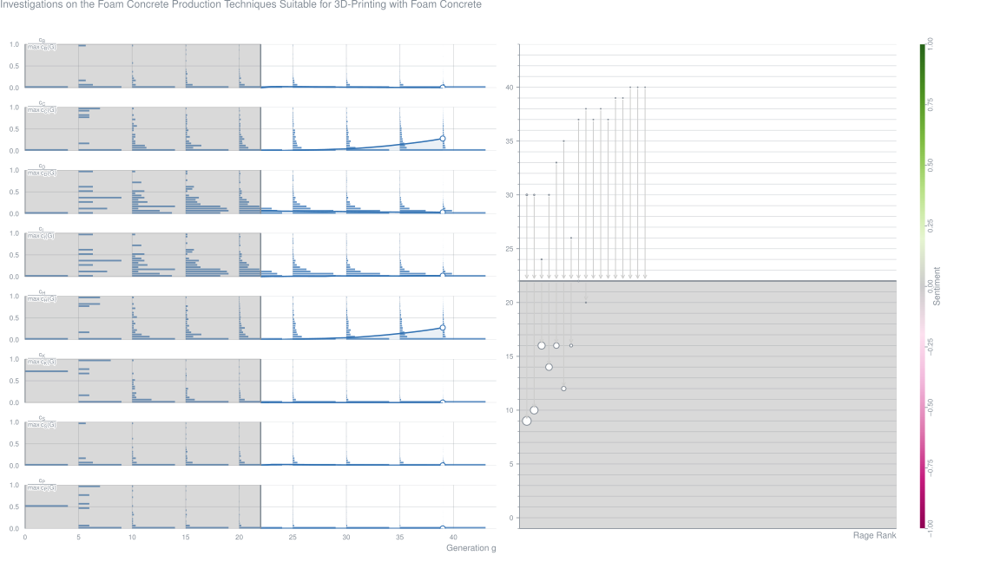
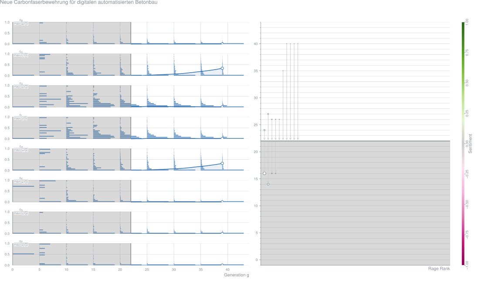
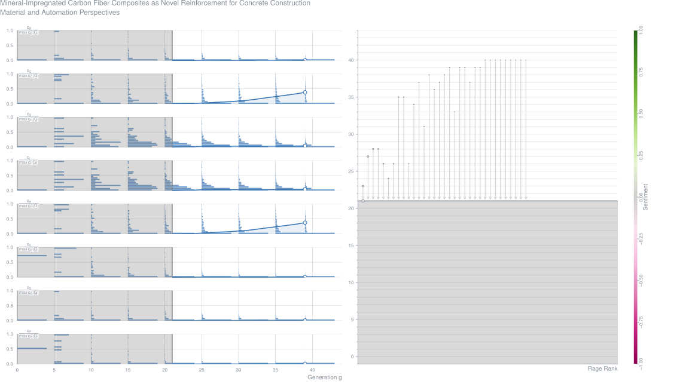
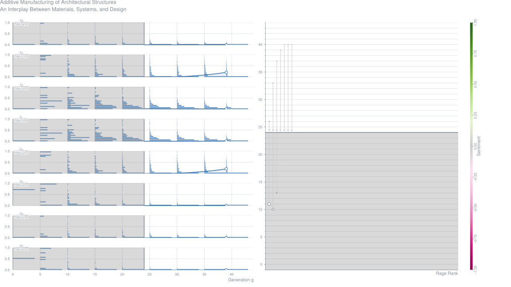
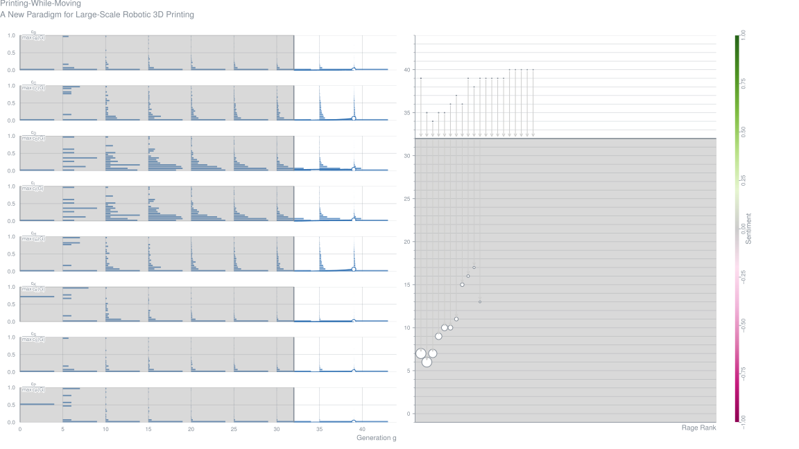

3D Printing for Construction Using Stone Sludge (2019-11)
Vani Annappa,
Florindo Gaspar,
Artur Mateus,
João Vitorino Contribution – Proceedings of the International Conference on Automation Innovation in Construction
Abstract3D printing in construction is recognized by its flexibility in design, cost, and time. It is amplifying every day in terms of technology which provides new solution to several problems. The process of 3D printing with cement-based mixes does not use formwork and thus gives increased flexibility to designers, saves the cost of labor and materials and reduces waste. Printers have been used to construct structural elements and full-scale buildings. But construction has been dealing with one of the major issue, which is the waste management. Stone sludge is one of the most abundantly produced wastes in stone quarries which have been dumped in landfill with low percentage of reuse. This research paper focuses on integrating stone sludge waste from the transformation industry as raw material in the mortar, having the objective to do 3D printing in a cost-effective and affordable way. An experimental work was carried out to obtain convenient mixes to print, evaluating some physical and mechanical properties of casted samples and comparing stone sludge-based mortar with traditional mortar mixes. Mortar specimens were obtained using a robotic arm with an extrusion printing process. Six mortar types with different proportions of stone sludge and admixtures were tested in a systematic way to determine their printable properties. The outcome of the test is presented, discussing possible reasons, factors, and relations between the results obtained. The work carried out shows that it was possible to print using stone sludge with smooth and uniform surface.Metrics
3D Printing Technology in the Construction Industry (2019-11)
Tiago Freire,
Francis Brun,
Artur Mateus,
Florindo Gaspar Contribution – Proceedings of the International Conference on Automation Innovation in Construction
AbstractThe demand for cost-effective solutions led to the development of 3D printing technology in the construction industry, as a possible constructive solution in the scope of the so-called Industry 4.0. It has been shown to be feasible in several areas, due to its low cost, speed, geometric freedom and being an environmentally friendly solution, mainly due to the possibility of using raw materials of endogenous origin, biodegradable or even to the reuse of waste. This technology is generally composed of one or more printheads, supported by a rail-guided crane. Another widely used strand is the robotic arms (extendable or not). In both, the end of the printhead is composed of an injector through which the mortar is forced to pass, using pumps. Bridges, shelters for soldiers, homes for disadvantaged people, or even destroyed by natural disasters, as well as the rehabilitation of buildings, are some examples of what has already been done, using 3D printing. This paper gives an overview of the applications of this type of technology, as also the possibilities, as for example dimensional, shape, building time, finishing and material characteristics. Printing technology, types of equipment, variants, design, alternative energy supply are presented. Examples are given about equipment that have been developed and tested for initial testing, demonstration and commercial implementation, and that may be used in the future. The advantages and future possibilities of 3D printing in construction are also discussed. It is an emerging technology with a great potential for evolution, namely in terms of materials for printing, size and finishing, or even in terms of simultaneous printing of mortar and insulation materials. However, it is currently limited for the lack of legislation and certification.Metrics
On the Potential of Integrating Building Information Modelling for the Additive Manufacturing of Concrete Structures (2019-11)
AbstractAdditive manufacturing (AM) and building information modelling (BIM) are emerging trends for which it has been claimed that both increase both efficiency and productivity in the construction industry. This study aims to synthesise and aggregate the literature addressing BIM integration in the AM of concrete structures and to exploit the joint value creation potential. This study firstly applies a mixed-review method to achieve mutual corroboration and interdependency between quantitative and qualitative research approaches. Bibliometric mapping is applied to identify, map and synthesise the relevant literature. Scoping review is used to examine the extent, gap, range and nature of the research activity. Afterward, a cross-situational analysis, the threats, opportunities, weaknesses and strengths2 matrix, is proposed and applied to exploit the joint value creation potential of different aspects ofAMand BIM. The study reveals a substantial interest in this field. However, progress in terms of integration is slow compared to the rapid development in interest in the two trends individually. The literature discusses or conceptualises such integration at building-scale, while prototyping or proof-of-concept processes are only rarely used. The study identified 12 joint value creation potentials through the integration of BIM in AM for concrete structures, which can create value by enabling more optimised designs, automated construction processes and data analytics that can apply throughout the building life-cycle process. The advancements of BIM integration in the AM of concrete structures are analysed and joint value creation potentials are proposed. The study proposes a cross-situation analysis that can be applied to structure joint value creation potentials from the multi-dimensional integration of different factors and topics, especially for emerging technologies.
Additive Fertigung im Bauwesen: Erste 3D‐gedruckte und bewehrte Betonbauteile im Shotcrete‐3D‐Printing‐Verfahren (SC3DP) (2019-11)
AbstractMit dem 3-D-Drucken (Additive Fertigung) steht eine digital gesteuerte Fertigungstechnologie bereit, die das Potenzial hat,spezifisch für das Bauwesen entwickelt, zu einer Schlüsseltechnologie für die Digitalisierung der Bauwirtschaft zu werden. Bei der Additiven Fertigung erfolgt der Bauteilaufbau allein durch einen digital gesteuerten, schichtenweisen Werkstoffauftrag, ohne Formenbau oder Umformprozesse. Dies stellt einen Paradigmenwechsel zu den noch überwiegend handwerklichen, formgebenden Bauprozessen dar. Um das Potenzial dieser Technologie voll auszuschöpfen, müssen Strukturdesign, Materialverhalten und Fertigungsprozess integrativ aufeinander abgestimmt werden. Dies ermöglicht Bauwerke von hoher Gestaltungsfreiheit und einen ressourceneffizienten Einsatz von Werkstoffen. Am Institut für Tragwerksentwurf (ITE) und am Institut für Baustoffe, Massivbau und Brandschutz (iBMB) der TU Braunschweig wird seit mehreren Jahren an Verfahren für den 3-D-Druck von großformatigen Betonbauteilen geforscht. In einem interdisziplinären Verbundvorhaben wurde das sog. Shotcrete-3-D-Printing-Verfahren (SC3DP) entwickelt. Bei der SC3DP-Technologie handelt es sich um ein automatisiertes robotisches, additives Fertigungsverfahren, das Betonbauteile unter kontrollierter Zugabe von Druckluft Schicht für Schicht aufbaut. In dem vorliegenden Bericht werden erste 3-D-gedruckte und bewehrte Betonbauteile vorgestellt, die das Potenzial der SC3DP-Technologie aufzeigen.
Robotic 3D Clay Printing of Prefabricated Non-Conventional Wall Components Based on a Parametric-Integrated Design (2019-11)
Abstract3D Printing (3DP) techniques and materials applied in construction-scale are currently under constant investigation, with notable results published at research and experimental level. While their great importance has been discussed extensively, very scarce detailed research has been published on 3DP parameters that are incorporated into the design process at an early stage to assess their impact on 3D printing performance, focusing on geometric conformity aspects. This work aims to provide a comprehensive parametric design investigation, driven by 3DP parameters, related to infill and overhang control, which can enhance a deeper understanding of their use in construction scale of non-conventional wall components, placing emphasis on construction time performance minimization. To this end, the paper initially illustrates the development of a parametric-integrated algorithm for toolpath planning and 3DP control using an industrial robot, capable of being universally adjusted based on open-source extruders with small, medium and large nozzle diameters. In this study, earth and claybased materials are chosen because of their lower environmental impact and recyclability compared to concretebased materials. Secondly, important printing parameters for toolpath planning, robotic and nozzle control, as well as robotic printing time, are presented and discussed in detail through 3DP experimental tests and a nonconventional wall study. The correlation of parameters in the early stage of design allows the assessment of their effectiveness to be used in construction-scale of non-conventional geometries towards minimization of 3DP time performanceMetrics
A Comparative Study of Mechanical Properties of Fly-Ash-Based Geopolymer Made by Casted and 3D Printing Methods (2019-11)
AbstractCurrently additive manufacturing (AM) is a rapidly developing industrial sector and a disruptive technology. It is an answer for new challenges such as resources saving and energy effectiveness as well as response for circular economy needs. Unfortunately, the full exploitation of 3D printing technology for ceramic is currently limited due to the in-process and in-service performance of the available materials’ sets, especially in application in construction industry. The main aim of the article is comparison mechanical properties such as compressive and flexural strength between casted and injected samples (simulation for 3D printing process). The same geopolymer mix, plain as well as with flax fibres, based of fly ash class F was casted and cured in the same temperature prior to its mechanical test with ‘printed’ samples.Metrics
Possibilities of Using the 3D Printing Process in the Concrete and Geopolymers Application (2019-11)
AbstractAdditive manufacturing, also known as three-dimension printing (3DP) has a lot of advantages over traditional construction technology, including high building efficient, less construction wastes and greatly reduced labor. This paper presents the possibility of applying this technique to 3D printing of geopolymers and concrete. Moreover, a general overview of the research and progress of 3D printing of geopolymers and concrete in recent times was characterized. This paper also identifies the most interesting and innovative solutions in this area and highlights emerging trends to stimulate further research.Metrics
Investigations on the Foam-Concrete Production Techniques Suitable for 3D Printing with Foam-Concrete (2019-11)
AbstractWith high thermal insulating property and low density, foam concrete has high potential in 3D-printing applications such as residential buildings. The synergy of the foam concrete and 3D-printing process pre-requisites research and optimization of foam concrete production. This paper presents investigations on the appropriateness of two different methods for production of foam concrete: 1) mixed foaming method in turbulence (colloidal) mixer and 2) mixed foaming method in cavitation disintegrator. Performance of synthetic and protein based foaming agents were examined. The dosage of the foaming agent was varied from 0.7% to 1.2% by weight of cement to produce foam concretes with densities ranging between 800 kg/m3 and 1500 kg/m3. The study shows that foaming ability of the designed concrete compositions depends primarily on their w-b ratio. Moreover, foaming with lesser dosage of foaming agent is possible when turbulence mixer is used. Furthermore, mechanical and physical properties of foam concrete, including compressive strength, bending strength, and water absorption were reported.Metrics
Neue Carbonfaserbewehrung für digitalen automatisierten Betonbau (2019-11)
Viktor Mechtcherine,
Albert Michel,
Marco Liebscher,
Kai Schneider,
Christoph Großmann Journal Article – Beton- und Stahlbetonbau, Vol. 114, No. 12, pp. 947-955
AbstractMineralisch gebundene Carbonfaserbewehrung ist eine neue Art der Armierung für den Betonbau, die im Vergleich zu bestehenden, kunststoffgebundenen Carbonbewehrungen beträchtliche Vorteile aufweist. Die mineralische Imprägnierung erhöht die Leistungsfähigkeit der Bewehrung bei erhöhten Temperaturen, verbessert ihren Verbund mit der Betonmatrix und steigert deutlich die technologische Flexibilität, insbesondere im Hinblick auf die Digitalisierung und Automatisierung der Bauteilherstellung. Nach der Erläuterung der Technologie zur kontinuierlichen Imprägnierung von Carbongarnen mit speziell entwickelten, feinen mineralischen Bindemittelsuspensionen werden einige Beispiele für die automatisierte Herstellung von Bewehrungssystemen aus diesem neuen Verbundwerkstoff vorgestellt. Diese Fälle umfassen eindimensionale Elemente wie Stäbe und Lamellen, zweidimensionale Bewehrungen in Form von Matten und dreidimensionale Systeme wie Bewehrungskörbe für einen Balkon oder Schalenstrukturen. Schließlich wird kurz auf die Verwendung des neuartigen Komposits für die Bewehrung in hochautomatisierter additiver Fertigung wie Beton-3D-Druck eingegangen.Metrics
Mineral-Impregnated Carbon-Fiber Composites as Novel Reinforcement for Concrete Construction: Material and Automation Perspectives (2019-11)
Viktor Mechtcherine,
Albert Michel,
Marco Liebscher,
Kai Schneider,
Christoph Großmann Journal Article – Automation in Construction, Vol. 110
AbstractMineral-impregnated carbon fiber composites (MCF) constitute a new type of reinforcement for construction. While inheriting the advantages of existing carbon fiber reinforcements, which are composite materials made of carbon filaments embedded in a thermoplastic or thermosetting matrix, MCF surpass the limitations of such polymer-impregnated types. More particularly, mineral impregnation considerably improves the performance of the reinforcement at elevated temperatures, enhances its bond to the concrete matrix, and increases technological flexibility, especially with respect to emerging automated production approaches. The article at hand presents the technology for continuous impregnation of carbon yarns with appropriately chosen fine mineral binder suspensions. Several examples for the automated manufacturing of reinforcement systems made of this new composite material are provided: one-dimensional elements such as bars and strips, two-dimensional reinforcements in the form of mats, and three-dimensional cases as examples of reinforcements for a balcony and shell elements. Furthermore, an outlook on introducing the novel reinforcement into highly automated, additive construction technologies is given.Metrics
Additive Manufacturing of Architectural Structures: An Interplay Between Materials, Systems, and Design (2019-11)
AbstractIn the past few years, the adaptation of additive manufacturing (AM) technologies for the building industry has reached new levels of sophistication, triggering design and development of novel 3D-printable materials and material interfaces; inspiring innovative architectural details; rethinking of material-specific printing systems; and enabling significant understanding of the interrelationship between multiple variables and aspects of design thinking and processes. For example, there are notable consequences of toolpath design in relation to material design, spatial experiences, and structural performance. AM has been recognized for its unique affordances, including flexibilities and freedom of free-form construction; speed of construction; reduced construction time and cost; reduced waste of resources, materials, labor, and energy; and increased safety due to innovations in automated construction. This technology has far-reaching implications and impact by augmenting conventional technologies and wisdom. This paper presents an overview of materials, systems, design explorations, and selected results in the context of NASA Centennial Challenge’s 3D-Printed Habitat Challenge Competition, leading to the production of the first fully 3D-printed, fully enclosed concrete habitat. The paper also reflects on the potential impacts of this technology when fully adopted by the construction industry.Metrics
Direct Printing-Test for Buildability of 3D Printable Concrete Considering Economic Viability (2019-11)
AbstractBuildability, i.e. the ability of a deposited material bulk to retain its dimensions under increasing load, is an inherent prerequisite for formwork-free digital concrete construction (DC). Since DC processes are relatively new, no standard methods of characterization are available yet. The paper presents direct printing test as a practice-oriented approach, in which buildability test parameters are determined by taking various process aspects and construction costs into consideration. In doing so, direct links between laboratory buildability tests and target applications are established. A systematic basis for calculating the time interval (TI) to be followed during laboratory testing is proposed for the full-width printing (FWP) and filament printing (FP) processes. The proposed approach is verified by applying it to a high-strength, printable, fine-grained concrete. Comparative analyses of FWP and FP revealed that to test the buildability of a material for FP processes, higher velocities of the printhead should be established for laboratory tests in comparison to those needed for FWP process, providing for equal construction rates.Metrics
Investigation into the Effect of Delays Between Printed Layers on the Mechanical Strength of Inkjet 3DP Mortar (2019-11)
AbstractCurrently, additive manufacturing have enabled to fabricate the three-dimensional models. 3D-Printing technique is a multipurpose process for producing structural members using a sequential layering approach. The “feature quality” of 3DP specimens can be improved by optimising the build constraints. In this paper, a mortar mix powder-base has been prepared that consists of cementitious materials. Experiments are conducted to investigate the effects of different delays in printing time on the mechanical properties of the scaffolds. It has been shown that the compressive stress and strength of printed specimens with a delay of 200ms were greater than specimens with other delay values.Metrics
Development of a Stabilized Natural Fiber-Reinforced Earth Composite for Construction Applications Using 3D Printing (2019-11)
AbstractThe application of additive manufacturing technologies to the construction industry has a wide range of advantages from the economic, social and design flexibility point of view. However, most of up to date research studies have been performed using ordinary Portland cement (OPC)-based mortars and concretes. Therefore, the objective of this article is to explore the development of an eco-friendly earth composite reinforced with natural sisal fibers and chemically stabilized with a hydraulic binder. Analysis of the workability by shear vane tests was performed on fresh earth samples to find the optimum water content in sisal fiberreinforced earth stabilized with OPC. Afterward, the effect of the addition of OPC on the hardening process was evaluated through shear vane and Vicat needle tests from 0 to 180 min after mixing. The results indicate that water content, fiber addition and OPC replacement have a strong influence on the shear yield strength. Furthermore, the presence of chemical stabilizers as OPC accelerates the hardening process allowing a faster layer-by-layer deposition. This low cost and eco-friendly preliminary earth-based composite can be used for 3D printing applications in the construction industry.Metrics
Printing-While-Moving: A New Paradigm for Large-Scale Robotic 3D Printing (2019-11)
Mehmet Tiryaki,
Xu Zhang,
Quang-Cuong Pham Contribution – International Conference on Intelligent Robots and Systems
AbstractBuilding and Construction have recently become an exciting application ground for robotics. In particular, rapid progress in material formulation and in robotics technology has made robotic 3D Printing of concrete a promising technique for in-situ construction. Yet, scalability remains an important hurdle to widespread adoption: the printing systems (gantry-based or arm-based) are often much larger than the structure to be printed, hence cumbersome. Recently, a mobile printing system-A manipulator mounted on a mobile base - was proposed to alleviate this issue: such a system, by moving its base, can potentially print a structure larger than itself. However, the proposed system could only print while being stationary, imposing thereby a limit on the size of structures that can be printed in a single take. Here, we develop a system that implements the printing-while-moving paradigm, which enables printing single-piece structures of arbitrary sizes with a single robot. This development requires solving motion planning, localization, and motion control problems that are specific to mobile 3D Printing. We report our framework to address those problems, and demonstrate, for the first time, a printing-while-moving experiment, wherein a 210 cm × 45 cm × 10 cm concrete structure is printed by a robot arm that has a reach of 87 cm.Metrics